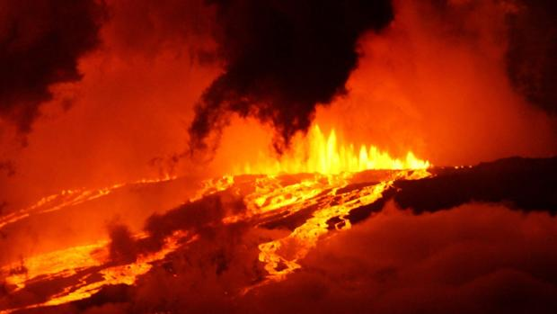
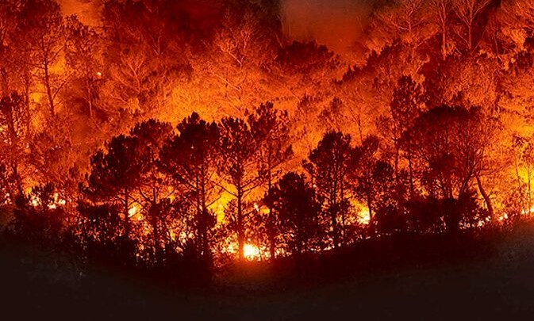

Los incendios forestales son fuegos fuera de control en un área natural, como bosques, pastizales o praderas. A menudo comienzan inadvertidos. Se propagan rápidamente y pueden dañar recursos naturales, destruir hogares y amenazar la seguridad de la población y de los bomberos. Los seres humanos causan la mayoría de los incendios forestales. Pueden ocurrir por accidente, como cuando las personas no prestan atención a una fogata, queman escombros o son descuidados al botar los cigarrillos. También pueden provocarse a propósito, a lo que se llama incendio premeditado. Los rayos y la lava también pueden causar incendios forestales. Estos son más comunes cuando las condiciones son secas. Los vientos fuertes pueden hacer que avancen más rápidamente. Aunque no hay garantías de seguridad si usted vive en un área amenazada por un incendio forestal, puede tomar medidas para protegerse. Usted debe tener un plan para desastres. Estar preparado puede ayudar a reducir el miedo, la ansiedad y las pérdidas. Si experimenta un desastre, es normal sentirse estresado. Es posible que necesite ayuda para encontrar formas para afrontarlo.
ERUPCIONES VOLCÁNICAS |
CAUSAS | CONSECUENCIAS | |
Una erupción volcánica (cuando el magma intenta salir a la superficie terrestre) ocurre porque las placas tectónicas se mueven (ya sea porque se separan o se empujan entre sí, lo que hace que se superpongan) y el magma de la profundidad comienza a ascender entre los espacios que dejaron las placas. |
El traslado de las poblaciones. Muchas comunidades enteras se ven obligadas a abandonar sus tierras para escapar de la lava que es capaz de arrasar con todo a su paso (en algunos casos, ha enterrado pueblos enteros). Una vez que la explosión cesó, el ambiente en los alrededores queda viciado con nubes de cenizas que dificultan la visibilidad y la respiración. |
||
La erupción volcánica es una emisión de magma (masa de rocas fundidas, líquidos y gases) que se encuentra en lo más profundo de la Tierra donde la temperatura es extremadamente caliente. Allí se genera una fuerte presión que empuja el magma hacia la superficie, filtrándose por las fisuras del suelo y de los volcanes. |
A medida que el magma asciende se van formando burbujas con gas en su interior que intentan fluir hacia la superficie. Cuando la consistencia magmática es más espesa, esas burbujas no pueden fluir con facilidad y acumulan cada vez mayor presión, hasta que se produce la explosión. |
La escasez temporaria de alimentos y de agua. Los materiales calientes que emana el volcán se mezclan con las corrientes de agua y forman un lodo que continúa en movimiento sobre la superficie terrestre. Los suelos fértiles se arruinan y el agua segura se torna no apta para el consumo durante un largo período de tiempo. |
|
| TIPOS | |||
| ERUPCIONES EFUSIVAS | ERUPCIONES EXPLOSIVAS | ||
Aquellas en las que el magma se eleva a través de la superficie del volcán en forma de lava o líquido viscoso, con poca concentración de gases. |
Aquellas en las que el magma retiene una gran cantidad de gases, adquiere mayor presión a medida que asciende a la superficie terrestre y sale al exterior con mucha fuerza, en forma de fragmentos sólidos llamados piroclastos. |
||